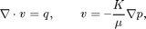
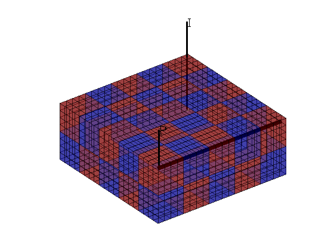
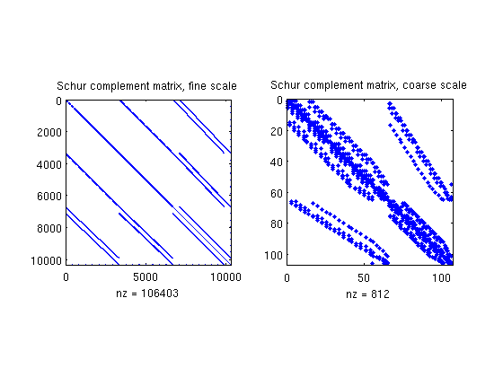
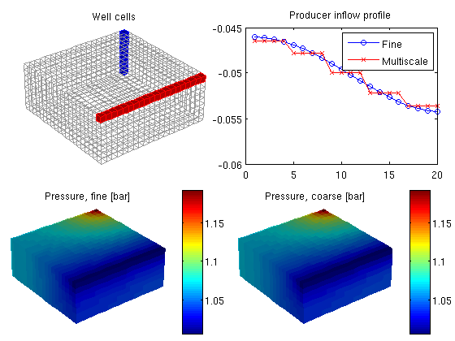

Contents
Multiscale Pressure Solver: Flow Driven by Horizontal and Vertical Well
Compare the fine-grid and the multiscale pressure solver by solving the single-phase pressure equation

for a Cartesian grid with isotropic, homogeneous permeability. This example is built upon the flow-solver tutorial "Using Peacemann well models".
require coarsegrid
Define the model and set data
We construct the Cartesian grid, set the permeability to 100 mD, and use the default single-phase fluid with density 1000 kg/m^3 and viscosity 1 cP.
nx = 20; ny = 20; nz = 8; Nx = 5; Ny = 5; Nz = 2; verbose = false; G = cartGrid([nx ny nz]); G = computeGeometry(G); rock.perm = repmat(100*milli*darcy, [G.cells.num, 1]); fluid = initSingleFluid('mu' , 1*centi*poise , ... 'rho', 1014*kilogram/meter^3);
Set two wells, one vertical and one horizontal. Note that a vertical well can be constructed by both addWell and verticalWell, so the appropriate choice depends on whether you know the well cells or the I, J, K position of the well.
W = verticalWell([], G, rock, nx, ny, 1:nz, ... 'Type', 'rate', 'Val', 1*meter^3/day, ... 'Radius', .1, 'Name', 'I', 'Comp_i', [1, 0]); W = addWell(W, G, rock, 1:nx, 'Type','bhp', ... 'Val', 1*barsa, 'Radius', .1, 'Dir', 'x', ... 'Name', 'P', 'Comp_i', [0, 1]);
Set up solution structures
Here we need four solution structures, two for each simulator to hold the solutions on the grid and in the wells, respectively.
xRef = initState(G, W, 0, [0, 1]); xMs = xRef;
Partition the grid
We partition the fine grid into a regular Nx-by-Ny-by-Nz coarse grid in index space so that each coarse block holds (nx/Nx)-by-(ny/Ny)-by-(nz/Nz) fine cells. The resulting vector p has one entry per fine-grid cell giving the index of the corresponding coarse block. After the grid is partitioned in index space, we postprocess it to make sure that all blocks consist of a connected set of fine cells. This step is superfluous for Cartesian grids, but is required for grids that are only logically Cartesian (e.g., corner-point and other mapped grids that may contain inactive or degenerate cells).
p = partitionUI(G, [Nx, Ny, Nz]); p = processPartition(G, p, 'Verbose', verbose); % Generate the coarse-grid structure CG = generateCoarseGrid(G, p, 'Verbose', verbose);
Plot the partition and the well placement
clf plotCellData(G, mod(p,2),'EdgeColor','k','FaceAlpha',0.5,'EdgeAlpha', 0.5); plotWell(G, W, 'radius', 0.1, 'color', 'k'); view(3), axis equal tight off
Assemble linear systems
First we compute the inner product to be used in the fine-scale and coarse-scale linear systems. Then we generate the coarse-scale system
gravity off S = computeMimeticIP(G, rock, 'Verbose', verbose); mu = fluid.properties(xMs); kr = fluid.relperm(ones([G.cells.num, 1]), xMs); mob = kr ./ mu; CS = generateCoarseSystem(G, rock, S, CG, mob, 'Verbose', verbose);
Then, we assemble the well systems for the fine and the coarse scale.
W = generateCoarseWellSystem(G, S, CG, CS, mob, rock, W); disp('W(1):'); display(W(1)); disp('W(2):'); display(W(2));
W(1):
cells: [8x1 double]
type: 'rate'
val: 1.1574e-05
r: 0.1000
dir: [8x1 char]
WI: [8x1 double]
dZ: [8x1 double]
name: 'I'
compi: [1 0]
refDepth: 0
sign: 1
CS: [1x1 struct]
W(2):
cells: [20x1 double]
type: 'bhp'
val: 100000
r: 0.1000
dir: [20x1 char]
WI: [20x1 double]
dZ: [20x1 double]
name: 'P'
compi: [0 1]
refDepth: 0
sign: []
CS: [1x1 struct]
Solve the global flow problems
xRef = solveIncompFlow (xRef, G, S, fluid, 'wells', W, ... 'Solver', S.type, 'MatrixOutput', true); xMs = solveIncompFlowMS(xMs , G, CG, p, S, CS, fluid, 'wells', W, ... 'Solver', S.type, 'MatrixOutput', true); % Report pressure in wells. dp = @(x) num2str(convertTo(x.wellSol(1).pressure, barsa)); disp(['DeltaP, Fine: ', dp(xRef)]) disp(['DeltaP, Ms: ', dp(xMs )])
DeltaP, Fine: 1.2093 DeltaP, Ms: 1.2115
Plot Schur complement matrices
clf subplot(1,2,1); spy(xRef.A); title('Schur complement matrix, fine scale'); subplot(1,2,2); spy(xMs.A); title('Schur complement matrix, coarse scale');
Plot solution
clf subplot('Position', [0.02 0.52 0.46 0.42]), plotGrid(G, 'FaceColor', 'none', 'EdgeColor', [.6, .6, .6]); plotGrid(G, W(1).cells, 'FaceColor', 'b', 'EdgeColor', 'b'); plotGrid(G, W(2).cells, 'FaceColor', 'r', 'EdgeColor', 'r'); title('Well cells') view(3), camproj perspective, axis tight equal off, camlight headlight subplot('Position', [0.54 0.52 0.42 0.40]), plot(convertTo(xRef.wellSol(2).flux, meter^3/day), '-ob'); hold on plot(convertTo(xMs .wellSol(2).flux, meter^3/day), '-xr'); legend('Fine', 'Multiscale') title('Producer inflow profile') subplot('Position', [0.02 0.02 0.46 0.42]), plotCellData(G, convertTo(xRef.pressure(1:G.cells.num), barsa)) title('Pressure, fine [bar]') view(3), camproj perspective, axis tight equal off, camlight headlight cax = caxis; colorbar subplot('Position', [0.52 0.02 0.46 0.42]), plotCellData(G, convertTo(xMs.pressure(1:G.cells.num), barsa)); title('Pressure, coarse [bar]') view(3), camproj perspective, axis tight equal off, camlight headlight caxis(cax); colorbar